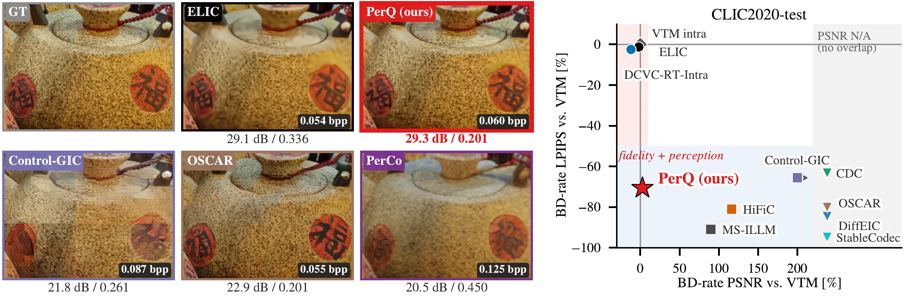
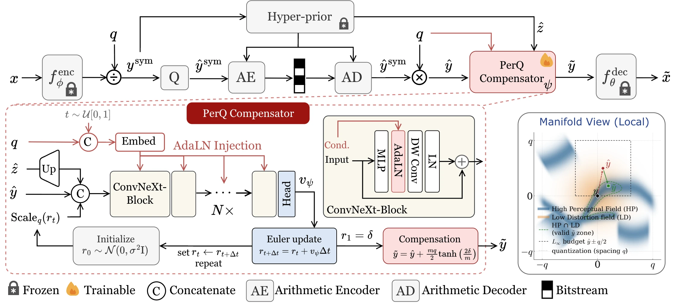
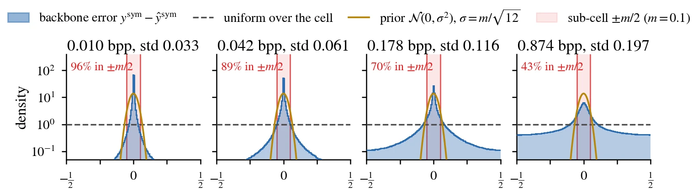
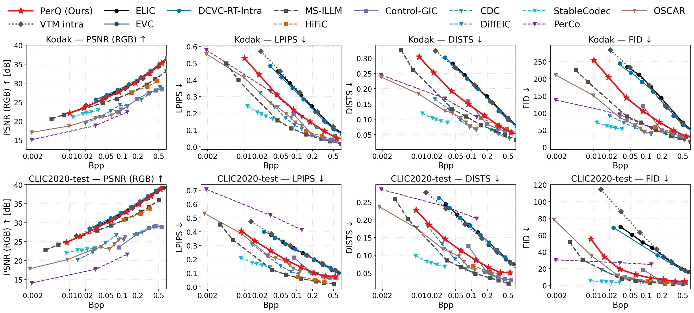
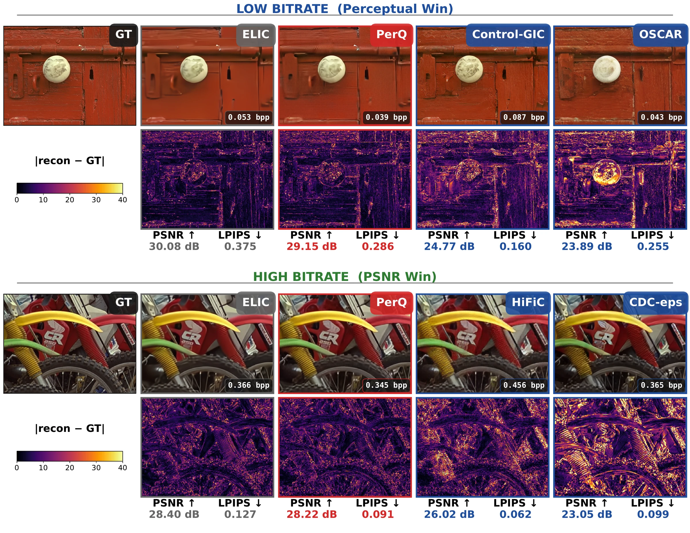

PerQ: Inverse Generative Modeling for Neural Image Compression via Quantization Error Compensation
1Visual Information Lab, University of Bristol2Tencent Media Lab
NeurIPS 2026

Abstract
Neural image codecs face a long-standing trade-off: distortion-optimized designs preserve pixel-wise fidelity but tend to produce blurred reconstructions at low bitrates, while generative designs close the perceptual gap with a learned prior, but with pixel fidelity saturating as bitrate increases. The latter typically requires training multiple models for various bitrate targets. This paper addresses these limitations by reframing the perceptual reconstruction problem. Starting from the quantization bound that holds for any modern multi-rate codec, we identify the quantization cell with the set of latents that produce the same transmitted symbols, and derive a transport bound under which every reconstruction decoded from this cell lies within a rate-determined radius of the codec's output. Modeling the latent over this cell which is relatively small to the full image manifold, rather than generating from an image prior, casts unconstrained perceptual reconstruction as inverse generative modeling with bounded support. We instantiate this as PerQ: an image codec that attaches a rate-conditioned flow-matching compensator supported on this cell to a frozen multi-rate distortion-optimized backbone. The experimental results on the Kodak and CLIC2020 datasets show that PerQ offers similar performance to generative neural image codecs (e.g., MS-ILLM) in perceptual metrics (LPIPS, FID), while still maintaining competitive coding performance compared to distortion-optimized codecs (e.g., ELIC) in PSNR. Moreover, PerQ covers a wide bitrate range with fast decoding from a single model checkpoint, and its compensator brings similar gains to three different backbones.
Method

Every latent within half a quantization step of the decoded latent rounds to the same symbols, so it produces the same bitstream. The source latent is one of them, and the decoder may pick any latent in this cell.
Every reconstruction decoded from the cell stays within a radius R(q) of the backbone's reconstruction, and R(q) grows linearly with the quantization step q. Restricting the compensator to a sub-cell of scale m shrinks the radius to m R(q).
A rate-conditioned flow-matching network (ConvNeXt blocks, 4 Euler steps) predicts the refinement, which a tanh clamp keeps within ±m/2 of each symbol (m = 0.1). The backbone stays frozen and one checkpoint serves all 64 rate points.

Interactive comparison
Flip between VTM, the DCVC-RT backbone and PerQ on three backbones (DCVC-RT, ELIC, MLIC++) at matched bitrates, on three CLIC2020-test crops. Hold for the original, zoom up to 3×.
Results
BD-rate against VVC (VTM 22.0 intra) on Kodak and CLIC2020-test, with decoding cost. PerQ reduces the LPIPS BD-rate by 57.4% and 70.6% while its PSNR BD-rate stays competitive with VVC, from one checkpoint that covers 0.009 to 0.87 bpp.
| Kodak, BD-rate vs. VVC (%) | CLIC2020-test, BD-rate vs. VVC (%) | ||||||||||
|---|---|---|---|---|---|---|---|---|---|---|---|
| Codec | Multi-rate | Dec. ms/Mp | kMACs/px | PSNR | LPIPS | DISTS | FID | PSNR | LPIPS | DISTS | FID |
| Conventional | |||||||||||
| VTM intra | – | – | – | 0 | 0 | 0 | 0 | 0 | 0 | 0 | 0 |
| VAE-based | |||||||||||
| ELIC | 206 | 332 | −2.0 | −2.1 | +2.4 | +7.3 | −1.9 | −1.3 | +9.4 | −13.8 | |
| EVC | ✓ | 57 | 291 | +2.0 | −9.0 | −5.4 | −4.0 | +3.7 | −8.7 | −2.3 | −6.2 |
| DCVC-RT-Intra | ✓ | 46 | 362 | −11.2 | −8.7 | −2.3 | −1.8 | −11.8 | −2.5 | +8.8 | −30.1 |
| GAN-based perceptual | |||||||||||
| MS-ILLM | 150 | 675 | +85.9 | −86.4 | −82.9 | −86.3 | +89.9 | −91.0 | −90.7 | −97.4 | |
| HiFiC | 150 | 546 | +128.6 | −69.8 | −59.0 | −64.3 | +116.3 | −81.1 | −76.9 | −83.0 | |
| Control-GIC | ✓ | 416 | 6299 | +372.4 | −74.0 | −68.5 | −69.7 | +1045.8 | −65.6 | −73.8 | −85.2 |
| Diffusion-based perceptual | |||||||||||
| PerCo | 6822 (20 steps) | 30930 | N/A | −64.1 | −84.4 | −92.9 | N/A | N/A | N/A | −94.3 | |
| DiffEIC | 11628 (50 steps) | 89899 | N/A | −81.0 | −88.8 | −91.3 | N/A | −84.6 | −87.4 | −96.5 | |
| CDC | 4854 (50 steps) | 39440 | +318.7 | −48.6 | −71.7 | −68.8 | N/A | −63.3 | −74.7 | −86.8 | |
| StableCodec | 494 (1 step) | 6138 | N/A | −92.7 | −96.2 | −96.8 | N/A | −94.9 | −97.1 | −99.0 | |
| OSCAR | ✓ | 456 (1 step) | 8262 | N/A | −79.0 | −91.8 | −92.3 | N/A | −80.2 | −88.7 | −96.0 |
| Ours | |||||||||||
| PerQ | ✓ | 87 (4 steps) | 702 | −1.6 | −57.4 | −63.2 | −67.9 | +2.7 | −70.6 | −77.4 | −91.9 |
All BD-rates are anchored to VVC intra (VTM 22.0, all-intra, YCbCr 4:4:4 BT.709, 10-bit) over QP 17 to 42; lower is better. N/A: the quality ranges do not overlap. Decoding time and kMACs per pixel at 768×512; for codecs that ship one checkpoint per rate, the mid-rate checkpoint.


BibTeX
@inproceedings{peng2026perq,
title = {PerQ: Inverse Generative Modeling for Neural Image Compression via Quantization Error Compensation},
author = {Peng, Tianhao and Kwan, Ho Man and Zhang, Fan and Liu, Shan and Bull, Dave},
booktitle = {Advances in Neural Information Processing Systems (NeurIPS)},
year = {2026}
}